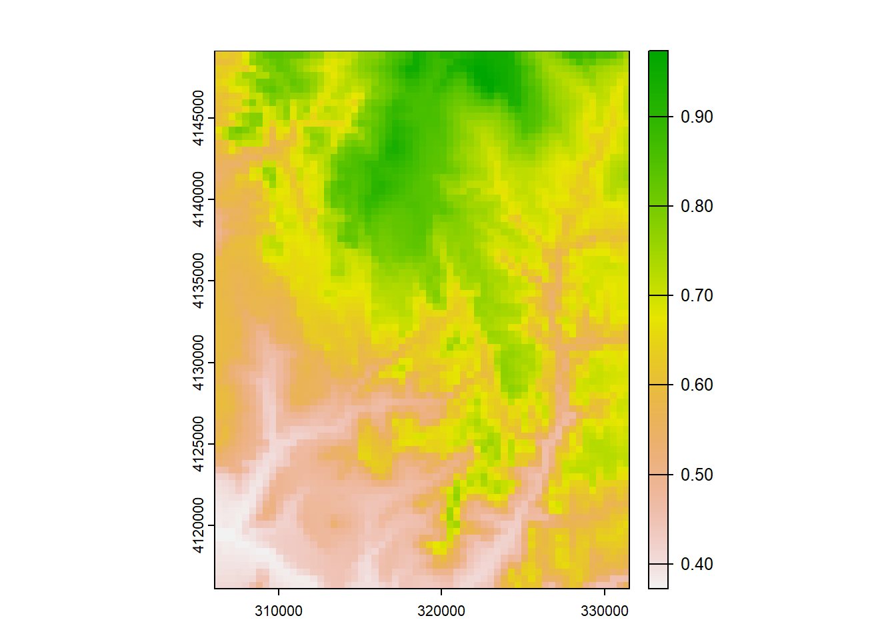

![]()
riskmap <- rast(system.file("raster/srtm.tif", package = "spDataLarge"))
## change into utm so easier to do the simulated tracks
riskmap <- project(riskmap, "EPSG:26912")
## make values [0,1]
riskmap <- riskmap/2891.000
## make resolution lower so things run quickly
riskmap <- aggregate(riskmap, fact=5, fun="mean")
## make square
tmp <- vect(ext(riskmap)-5000, crs=crs(riskmap))
riskmap <- crop(riskmap, tmp)
## quick plot
plot(riskmap)
riskmapclass : SpatRaster
dimensions : 79, 61, 1 (nrow, ncol, nlyr)
resolution : 417.6664, 417.6664 (x, y)
extent : 306074, 331551.7, 4116123, 4149119 (xmin, xmax, ymin, ymax)
coord. ref. : NAD83 / UTM zone 12N (EPSG:26912)
source(s) : memory
name : srtm
min value : 0.3725258
max value : 0.9733700 ## find dimensions of area so can choose step lengths
risk_bb <- ext(riskmap)
# risk_bb[2]-risk_bb[1]
# risk_bb[4]-risk_bb[3]
## ~35km x 43km
## make slightly smaller so indivdiuals not on edge
risk_bb <- risk_bb + c(5000, -5000, 5000, -5000)
## save cell size
cell_size = res(riskmap)[1]
## save crs
crs_risk <- crs(riskmap)